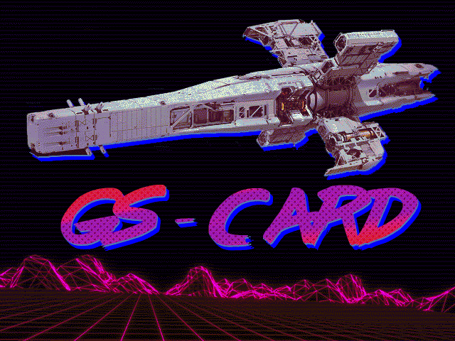

- a logistics strategy for MS-DOS -
GS-CARD is a logistics strategy set in space. You take on the role of a cargo ship captain travelling through the Saferi galaxy, completing delivery contracts, avoiding pirates, customs, and dangerous objects. The entire interface is identical to MS-DOS programs from the 90s.
The game was written in Turbo C 2.0 (1989) strictly following the C89 standard and runs on real DOS or in emulators.
We used to play a homebrew tabletop RPG with friends. It started as classic fantasy with Irish, Arab, and mermaid characters. Over time, the game evolved into a civilisation‑scale strategy (like Europa Universalis), and eventually went into space (like Stellaris). In a single game session, hundreds of years would pass – civilisations grew, fought, and colonised nearby star systems.
This is how the Saferi galaxy was populated – just one of five galaxies in our homebrew “multiverse”. At the same time, in another part of the universe (the Milky Way, Terra), an ancient Empire was fading away, which had invented hyperdrives. When Saferi's civilisations reached space, they stumbled upon the ruins of that Empire and gained access to its technology. One such technology was the GS-Card – a hardware‑software system for safe hyper‑jump navigation.
To capture the spirit of that “ancient empire”, I decided to write a simulator of the GS-Card using real retro software – Turbo C 2.0. The first version appeared in 2018 and only calculated routes. But that wasn’t enough, so I turned it into a full‑fledged game about a space trucker – you can trade, take jobs, buy ships and upgrades. And now, after 8 years, the project is finally released.
Fuel is consumed on every jump. You can refuel at stations marked [F] (fuel stations). Upgrades and new ships are sold in systems marked [S] (shipyards).
The whole project is open and available on GitHub:
https://github.com/johnsnowdies/gs-card
Note: The browser version includes a built‑in emulator, so no extra setup is required – just hit “Play”.